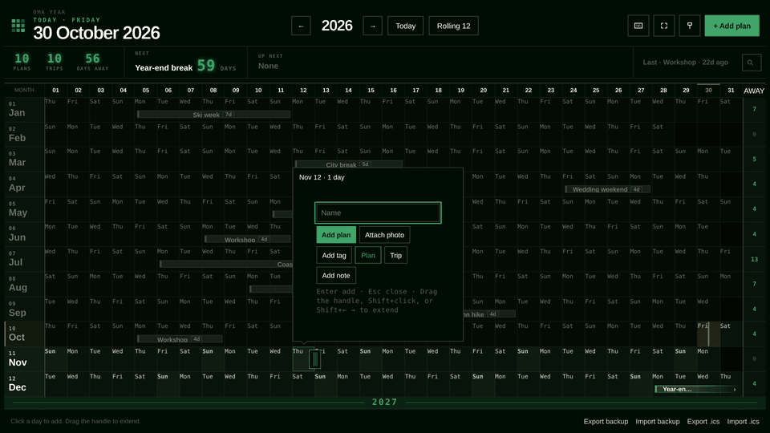
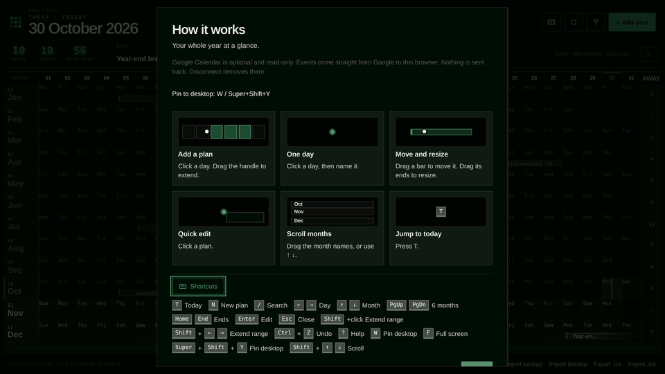
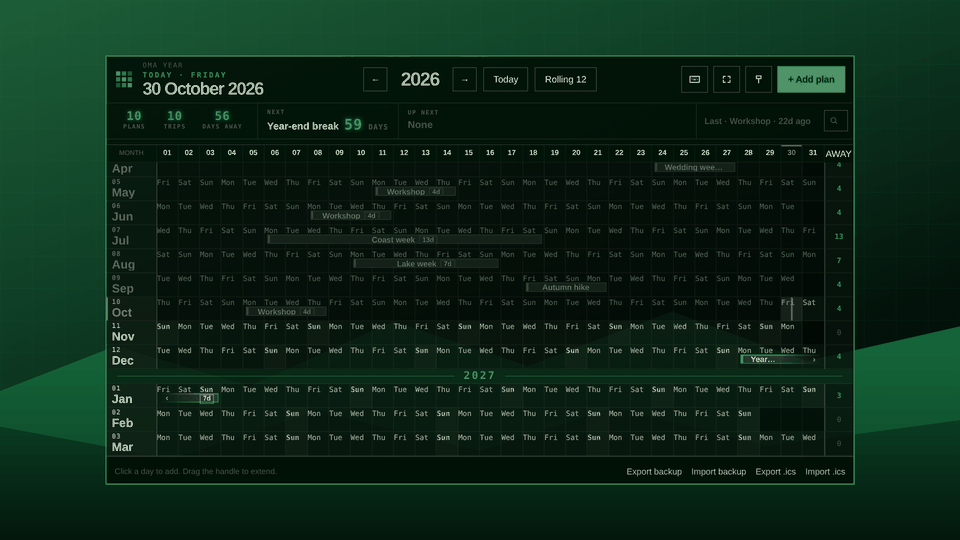

OMARCHY PLUGIN · LOCAL-FIRST · MIT
Oma Year Planner
MARKETPLACEYour whole year on one screen
A local-first year calendar for Omarchy, with no backend, no account and no build step. Add plans, filter the year by name, and float it as a translucent window over your desktop.







omarchy plugin add https://github.com/KarPage/oma-year-planner --enableSizes measured 2026-10-30 from a depth-1 clone of github.com/KarPage/oma-year-planner.
01 FEATURES
Months run down one scrolling board. The day header stays pinned, and Today brings the current month back to the middle.
Past months and finished plans dim, so what is ahead stands out.
Click a day, name the plan, pick Plan or Trip. Drag a bar to move it, or drag its ends to resize it.
Trips add up to a days-away count per month and for the year. Next, Up next and Last sit on the strip.
A still picture of your year laid over your wallpaper, painted again at midnight.
Reads the colours from your active Omarchy theme each time it opens.
Plans stay in your browser. No server, no account, no analytics and no tracking.
Search with /, undo with Ctrl+Z, and full keyboard navigation. Press ? for the list.
02 INSTALL
omarchy plugin add https://github.com/KarPage/oma-year-planner --enable~/.config/omarchy/plugins/io.github.karpage.oma-year/year-planner/opengit clone https://github.com/KarPage/oma-year-planner.git && cd oma-year-planner/year-planner && ./openThe plugin adds a calendar button to your bar. You need Chromium (it ships with Omarchy), Python 3 and curl, plus ImageMagick for wallpaper mode.
03 CREDITS · NOTES
All plans in these screenshots are the planner's built-in demo year. Captured in a sandbox browser from the public repo at bd1c117.
The floating-window shot draws the window at 86% opacity over a plain generated backdrop, the way a translucent Hyprland window looks.
Unofficial. Not affiliated with Omarchy.